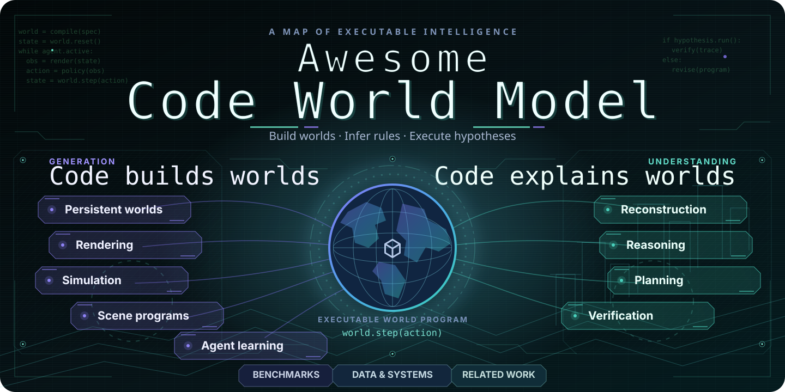

📜 Awesome Code World Model
Executable worlds, organized by the research questions they answer.

Code builds worlds. Code explains worlds.
Search papers · Filter mechanisms · Compare work · Explore benchmarks
60 papers & projects · 23 benchmark suites · 8 comparison dimensions
Sources checked 2026-10-23
Research map · Benchmark atlas · Taxonomy · Contribute
| 🌟 Representative |
✅ Public resources |
❌️ Resources not found |
Legend. 🌟 Representative work appears first and in bold. ✅ links public code, data, weights or a project page; it does not certify an open-source license. Category dates use first submission; Recent Paper Updates may use collection-update dates. Unknown releases remain Date TBC.
🚩 News & Updates
📚 [2026-10-23] Two New Papers — Added HARMONY for single-image scene reconstruction and VibeWorlding for 3D world construction.
🧭 [2026-10-23] Research Map & README Refresh — Separated interaction from streaming delivery; narrowed executable verification to methods, with benchmarks indexed by task. Refreshed the visual research map and compact reading index. All 58 records are retained.
Earlier collection updates
📊 [2026-10-21] Benchmark Atlas & Infrastructure — Added 14 works, including 4DCodeBench, BVB, BlenderWorld, PhysCodeGym, PhySimCode, ExeWorldBench, WorldStream and H3 Streaming VAE Decoder. Named benchmark suites now have task, artifact and evaluation indexes; 3DCodeVerse data and harness resources are linked.
🔥 [2026-10-21] Initial Collection — 44 papers and projects covering Code World Model (generation) and Code as Model (understanding), including earlier foundations and the latest October releases.
🗂️ [2026-10-21] Research Taxonomy — Nine core research categories, two related perspectives, and seven comparison dimensions. Representative works are highlighted with 🌟.
🤖 [2026-10-21] Daily Discovery Prototype — Daily arXiv and GitHub discovery is implemented as a candidate-review workflow. Automated promotion and a full literature-review agent remain future work.
🔥 Recent Paper Updates
[2026-10-20] ✅SolarRenderer: Few-Step Generative Reference Rendering
[2026-10-20] ❌️NeoWorld-3: From Pixels to Code-Defined Physical Worlds
[2026-10-20] ✅Matrix-Game 4.0: Harnessing Video Models for Real-Time Playable Game Worlds
[2026-10-19] ❌️From Code to Playable Systems: CEGame-Bench for Long-Horizon Game Creation Agents
[2026-10-18] ❌️LLM Agents as Suppliers of Physical System Models: Calibration and Acceptance in Modelica
[2026-10-15] ✅Mallea: Building, Steering, and Memorizing Worlds with Coding Agent
More recent papers & projects with unconfirmed dates
[2026-10-15] ✅3DCodeVerse: Exploring 3D Worlds as Code
[2026-10-14] ✅BlenderWorld: Benchmarking Visual Agents for 3D Creation from Real-World References
[2026-10-13] ✅RoboSimStudio: An Interactive Toolkit for Human and Agent Rapid Real2Sim of Robot Manipulation Tasks
[2026-10-13] ✅Code2Worlds-2: Physically Plausible Agent Harness for Embodied World Simulation
[2026-10-12] ✅PhysCodeGym: Benchmarking Coding Agents for Physically Verifiable 4D Reconstruction
[2026-10-11] ✅PhySimCode: A Benchmark and Evaluation Method for Physics Video to Code Generation
[2026-10-11] ❌️ANTE: Anticipate, Then Execute -- Learning Internal World Models for Coding Agents from Verified Beliefs
[2026-10-10] ✅ExeWorldBench: Benchmarking Code-Based Executable 3D World Modeling
[2026-10-08] ✅AgentGarten: Code Worlds for Evolving Agents
[2026-10-06] ✅WorldSolver: Can LLM Agents Simulate the Physical Dynamics via Solver Generation?
[2026-10-03] ✅Video2World: Benchmarking Coding Agents for Interactive World Modeling from Embodied Videos
[2026-10-02] ✅4DCodeBench: Benchmarking Agents on Inverse Graphics of Dynamic Scenes
[2026-10-01] ✅World Editing: Intervening on Executable Worlds at Increasing Depth
[2026-09-30] ❌️Physis-Lang: Self-Evolving Language as a Physical Representation for Video World Model
Official projects with unconfirmed first-release dates
[Date TBC] ✅WorldStream: Building 3D Worlds as You Explore
[Date TBC] ✅StreamRender-H3: Interactive Coding Worlds with Real-time Streaming Diffusion Render
[Date TBC] ✅Streaming Code World Model
[Date TBC] ✅H3 Streaming VAE Decoder: Training-Free Streaming without Future Latents
[Date TBC] ✅Code Video Model
🧭 Overview
Two reading directions share one executable representation. Choose a research question below; use the benchmark and infrastructure indexes for reusable resources.
Each work appears once in the main research list, under its primary contribution. Cross-category associations remain searchable in the website. Classification rationale.
💻 Code World Model · Generation
Intent → executable state and rules → observations and interaction.
🎮 Persistent & playable worlds
Who owns state, rules and consequences outside the current frame?
[2026-08] ✅🌟(Persistent world state with proxy-conditioned generative observations) Code World Model: Coding Agent as World Brain · Code · Project
[2026-10] ✅Matrix-Game 4.0: Harnessing Video Models for Real-Time Playable Game Worlds · Project
[2026-10] ❌️From Code to Playable Systems: CEGame-Bench for Long-Horizon Game Creation Agents
[2026-10] ✅Mallea: Building, Steering, and Memorizing Worlds with Coding Agent · Project
[2026-10] ✅World Editing: Intervening on Executable Worlds at Increasing Depth · Code · Project
[2026-09] ✅GameDirector: Decoupling Gameplay Logic from Rendering for Player-Configurable Game World Models · Project
[2026-09] ✅Code Plans, Diffusion Renders: Open-Ended Generative World Modeling · Project
[2026-09] ✅Programmable World Model · Project · Code
[Date TBC] ✅WorldStream: Building 3D Worlds as You Explore · Project · Project
🎬 Code-guided video & rendering
How does executable structure control appearance over time?
[2026-07] ✅🌟(Executable Blender code as process-level chain of thought) VideoCoCo: Code-as-CoT for Physically-Consistent Video Generation via an Agentic Dual-Engine System · Code
[2026-10] ✅SolarRenderer: Few-Step Generative Reference Rendering · Project · Code
[Date TBC] ✅StreamRender-H3: Interactive Coding Worlds with Real-time Streaming Diffusion Render · Code
[Date TBC] ✅Streaming Code World Model · Weights
[Date TBC] ✅Code Video Model · Project · Code · Data
⚙️ Physical simulation synthesis
Does generated code instantiate working physical mechanisms?
[2026-02] ✅🌟(Language-to-code generation of dynamic 4D worlds) Code2Worlds: Empowering Coding LLMs for 4D World Generation · Code · Project
[2026-10] ✅Code2Worlds-2: Physically Plausible Agent Harness for Embodied World Simulation · Code · Project
[2026-10] ✅ExeWorldBench: Benchmarking Code-Based Executable 3D World Modeling · Project · Project · Data
[2026-09] ❌️Text2Sim: Agentic Physics-Based Simulation Generation with Distilled Expertise
[2026-09] ❌️GPUPhysBench: Benchmarking Coding Agents for Correct and Efficient GPU Physics Simulation
[2026-09] ❌️WorldAgent: Verification-Guided Agentic Physical World Construction
[2026-07] ✅GS-Agent: Creating 4D Physical Worlds With Generative Simulation · Project
[2026-07] ✅SimWorlds: A Multi-Agent System for Dynamic 3D Scene Creation · Project
🏗️ Scene & asset programs
Can a scene be edited, composed and loaded into a simulator?
[2026-10] ✅3DCodeVerse: Exploring 3D Worlds as Code · Project · Code · Data
[2026-10] ✅BlenderWorld: Benchmarking Visual Agents for 3D Creation from Real-World References · Code · Project · Data
[2026-09] ✅Code4Scene: Benchmarking Coding Agents for Constructing and Editing 3D Scenes · Code · Project
[2026-08] ✅VibeWorlding: Can Multimodal Agents Construct 3D Open Worlds End-to-End? · Project · Code · Data · Weights
[2026-05] ✅3DCodeBench: Benchmarking Agentic Procedural 3D Modeling Via Code · Code · Project · Data
[2026-05] ✅SceneCode: Executable World Programs for Editable Indoor Scenes with Articulated Objects · Project
[2025-04] ✅BlenderGym: Benchmarking Foundational Model Systems for Graphics Editing · Code · Project · Data
[2024-03] ❌️SceneCraft: An LLM Agent for Synthesizing 3D Scene as Blender Code
🌱 Worlds for agent learning
Can generated environments grow with an agent's capabilities?
[2023-11] ✅🌟(The propose–generate–learn loop for generative simulation) RoboGen: Towards Unleashing Infinite Data for Automated Robot Learning via Generative Simulation · Code · Project
[2026-10] ✅AgentGarten: Code Worlds for Evolving Agents · Project
[2026-05] ❌️SimWorld Studio: Automatic Environment Generation with Evolving Coding Agent for Embodied Agent Learning
[2024-09] ✅FactorSim: Generative Simulation via Factorized Representation · Project
🧠 Code as Model · Understanding
Observations → executable hypotheses → prediction, intervention and verification.
🔄 Inverse world reconstruction
Which program and parameters explain the observations?
[2026-06] ✅🌟(Code vs. video diffusion for inverse physics and stable extrapolation) MPMWorlds: Material-Point-Method Simulations for Inferring and Extrapolating Physical Dynamics · Project
[2026-10] ❌️NeoWorld-3: From Pixels to Code-Defined Physical Worlds
[2026-10] ❌️LLM Agents as Suppliers of Physical System Models: Calibration and Acceptance in Modelica
[2026-10] ✅RoboSimStudio: An Interactive Toolkit for Human and Agent Rapid Real2Sim of Robot Manipulation Tasks · Project
[2026-10] ✅PhysCodeGym: Benchmarking Coding Agents for Physically Verifiable 4D Reconstruction · Code · Data
[2026-10] ✅PhySimCode: A Benchmark and Evaluation Method for Physics Video to Code Generation · Code · Project · Data
[2026-10] ✅Video2World: Benchmarking Coding Agents for Interactive World Modeling from Embodied Videos · Project · Code · Data
[2026-10] ✅4DCodeBench: Benchmarking Agents on Inverse Graphics of Dynamic Scenes · Code · Project · Data · Data
[2026-09] ✅HARMONY: Hierarchical Agentic Reasoning for MONocular Image-to-Scene Synthesis · Project · Code · Data
[2026-09] ✅BVB: Benchmarking Agentic Video Understanding via Programmatic Reconstruction in Blender · Code · Project
[2026-09] ❌️Recursive Code World Models: Building Complex Worlds through Recursive Scene Programs
🧪 Executable physical reasoning
Does running a hypothesis support quantitative predictions and interventions?
[2026-08] ✅🌟(Executable world hypotheses for quantitative physical reasoning) Code as Worlds: Agentic Discovery of Executable World Representations for Physical Reasoning · Project
[2026-10] ✅WorldSolver: Can LLM Agents Simulate the Physical Dynamics via Solver Generation? · Code
🧩 Rule induction & planning
Is the inferred transition function useful for choosing actions?
[2024-05] ✅🌟(Program-synthesis search for executable transition models) Generating Code World Models with Large Language Models Guided by Monte Carlo Tree Search · Project
[2019-12] ❌️🌟(Early world-program formulation for compositional planning) World Programs for Model-Based Learning and Planning in Compositional State and Action Spaces
[2026-07] ✅VisualPatchWorld: Code World Models as Latent Structured Representations for Planning · Code
[2025-10] ❌️Code World Models for General Game Playing
📏 Executable verification
Which executable checks can accept, reject or qualify a world hypothesis?
[2026-09] ❌️VeriPhy: Agentic Physical Reasoning for World Model Evaluation and Refinement
📊 Benchmarks & Evaluation
Compare the task, submitted artifact and evidence of success. These suites test different capabilities; their scores are not interchangeable.
Open the Benchmark Atlas → for inputs, submitted artifacts, evaluation evidence and version caveats. Suite names below link to their sources; method papers are counted only once.
🛠️ Datasets, Harnesses & Streaming Systems
Reusable code corpora, construction workflows and systems that deliver persistent worlds or streaming pixels.
🔎 Related Perspectives
Neighboring work clarifies the scope: software execution, non-program representations and decoder components.
💻 Software execution worlds
Is code the environment being predicted rather than a physical world representation?
[2026-10] ❌️ANTE: Anticipate, Then Execute -- Learning Internal World Models for Coding Agents from Verified Beliefs
[2026-02] ❌️Debugging code world models
[2026-02] ✅SWE-World: Building Software Engineering Agents in Docker-Free Environments · Code
[2025-09] ✅CWM: An Open-Weights LLM for Research on Code Generation with World Models · Code
💬 Alternative representations
What can language, constraints or neural priors supply without synthesized world code?
[2026-09] ❌️Physis-Lang: Self-Evolving Language as a Physical Representation for Video World Model
[2024-04] ✅PhysDreamer: Physics-Based Interaction with 3D Objects via Video Generation · Project
[2023-12] ✅Holodeck: Language Guided Generation of 3D Embodied AI Environments · Code · Project
⚡ Streaming decoder infrastructure
When can pixels be emitted after a latent arrives?
[Date TBC] ✅H3 Streaming VAE Decoder: Training-Free Streaming without Future Latents · Code
🧭 Reading Guide & Taxonomy
Research categories describe the main question. Benchmarks and infrastructure describe reusable contributions. Comparison dimensions describe mechanisms; they are multi-label facets, not a ranking.
Streaming delivery does not establish real-time control. Public resources do not establish an open-source license. Full taxonomy and scope boundaries →
📝 Citation
Please cite the original papers. Download all BibTeX entries, or copy individual citations from the website.
Contributing & Maintenance
Missing a paper or a resource? See CONTRIBUTING.md. Source checks and naming boundaries are documented in Research notes.
Local preview & maintenance
data/papers.json stores the literature; data/taxonomy.json defines categories and dimensions. Edit docs/README.template.md and scripts/build.py to change this generated README.
python3 scripts/build.py
python3 -m unittest discover -s tests -v
python3 -m http.server 8000 --directory site
Open http://localhost:8000, or open site/index.html directly. GitHub Pages setup · Daily discovery workflow · JSON · CSV.
Acknowledgments & License
Visual hierarchy and paper-list conventions take inspiration from Awesome Interactive World Model. The research taxonomy, editorial notes, vector artwork and implementation are maintained independently.
Repository code and original editorial content: MIT. Papers and external resources belong to their respective authors and providers.